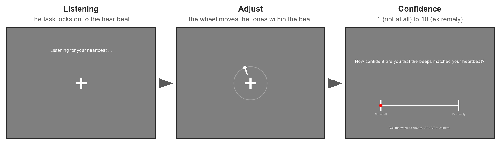

Phase Adjustment Task#
The Phase Adjustment Task (PAT) [Plans et al., 2021] measures how consistently a person can place a tone at the same point of their own cardiac cycle. Participants hear one tone per heartbeat and turn a dial until tone and heartbeat feel simultaneous. There is no correct answer on a single trial: what is scored is whether the choices cluster at one phase of the cycle across trials, more than they would by chance.
Cardioception’s version follows the ECG-based implementation of Hodgetts et al. [2026] (PAT-ECG), which triggers the tones from the R-wave rather than from a finger pulse, adds a phase mode and an exteroceptive control task, and scores every participant on a grid of eight consistency measures. The PAT 2.0 refinements of Palmer et al. [2026] provide the fixed-mapping score and the Monte Carlo thresholds.
Beta
The PAT module is close to feature complete and still being validated. The original PAT-ECG uses a hardware R-wave trigger and a Teensy microcontroller; this port detects the R-wave in software, which changes the timing budget. Read timing and latency before you plan a study.
What a trial looks like#
The task listens for the heartbeat, then plays a 1000 Hz tone on every beat at the dial’s current delay after the R-wave. The participant rolls the mouse wheel to move the tone earlier or later until tone and heartbeat feel simultaneous, then presses space. They then rate their confidence from 1 (“Not at all”) to 10 (“Extremely”). The dial starts each trial at one of four phases (0, 90, 180 or 270 degrees), drawn in shuffled blocks of four without an immediate repeat, so a remembered dial position does not help.

One PAT trial, from screenshots of the running task. The ring and pointer show the dial; showDial=False hides them.#
Each trial yields a chosen delay d (ms from the R-wave to the tone), a heart period p (ms) and a confidence rating w. The delay becomes a phase angle theta = 2 pi d / p, and consistency is the mean resultant length (MRL) of the angles over trials:
R = | (1/n) sum_r exp(i theta_r) |
R_w = | sum_r w_r exp(i theta_r) | / sum_r w_r (confidence-weighted)
R runs from 0 (choices spread evenly round the cycle) to 1 (every trial at the same phase). Someone who feels their heartbeat at a stable moment, and can match a tone to it, should score high. Someone guessing should score near the chance level for their number of trials, about 0.33 for 28.
A session runs the instructions, a tutorial, 8 practice trials and 28 main trials, with a break every 10. The PAT-ECG study took about 30 minutes for this, and about 10 for the exteroceptive control with the same trial counts. Between 15 and 20 trials already separate consistent responders from chance; gains beyond 20 are small [Palmer et al., 2026].
What you need#
An ECG streamed over Lab Streaming Layer. Install the dependency with
pip install cardioception-toolbox[lsl]. For a PLUX hub, Recording devices covers the bridge, the channel label and the electrodes.Headphones or speakers on the stimulus PC. Tones are 1000 Hz, 30 ms, with 5 ms ramps, on the left channel, played through PsychPortAudio at latency class 1, which reports the true onset of every tone.
A mouse with a wheel, held in the dominant hand. The left and right arrow keys move the dial too. Space, with the other hand, ends the trial.
For the exteroceptive control only, a vibrotactile transducer (Dayton Audio TT25-16 or similar) driven from the right audio channel through a small amplifier. Tone and vibration come from one stereo stream, so they are locked to the sample. The burst is silent unless
vibrationVolumeis raised above 0, so ordinary speakers never carry it. The tactor also buzzes faintly, which is expected.LabRecorder, recording the ECG stream and the task’s
PATmarker stream, so the ECG and every beat, tone and key press land on one clock in one XDF file.
Running it#
Start the PLUX bridge and LabRecorder, then run wrappers/pat_lsl.py or your copy of it:
python pat_lsl.py
A dialog asks for:
Field |
Default |
What it sets |
|---|---|---|
participant |
|
The participant identifier |
session |
|
The session identifier; |
LSL stream |
|
The name of the ECG stream |
Channel |
none |
The label of the ECG channel. It must be given, unless the exteroceptive variant is ticked |
Mode |
|
|
Extero (vibration) |
off |
Run the exteroceptive variant, which needs no ECG |
Language |
|
The instructions, |
The same in a script, with the channel your stream has:
from cardioception.devices import LSLRecorder
from cardioception.PAT.parameters import getParameters
from cardioception.PAT.task import run
# The task opens its own "PAT" marker stream, so the recorder opens none
recorder = LSLRecorder(name="PLUX", channel="ECG1", signal_type="ecg", marker_stream=None)
parameters = getParameters(participant="sub01", session="001", recorder=recorder, mode="relative")
try:
run(parameters, runTutorial=True, confidenceRating=True)
finally:
parameters["win"].close()
parameters["engine"].close() # stops the beat detector, releases the sound card
recorder.close()
For the exteroceptive variant pass extero=True and no recorder. The paper ran it before the PAT.
Ask the participant to focus on one consistent body location, to sit still, breathe normally and not tense their muscles, which would amplify the heartbeat sensation. The experimenter sees a one-line status every second in the console (trial, heart rate, phase, tones anchored on real and predicted beats), and a warning after 3 s without a beat (noBeatWarning). Esc at any prompt stops the task; what has been collected is saved. Esc during a trial, before space, drops that trial: the marker stream gets an abort marker, the trial has no row in final.txt, and its tones are left out of tones.txt.
A trial ends without a choice after maxTrialTime seconds (60) if space has not ended it, and its row is marked timeout. Space works only once a tone has been heard. The confidence rating has no time limit, as in the paper.
The main settings#
The defaults of getParameters are those of the paper, except where noted:
Parameter |
Default |
Meaning |
|---|---|---|
|
|
What the dial controls (below) |
|
28, 8 |
Main and practice trials |
|
0, 90, 180, 270 |
Start phases of the dial, in degrees |
|
|
Run the exteroceptive control (below) |
|
|
The vibration’s period in the exteroceptive variant |
|
0 |
The vibration burst is silent unless raised |
|
|
Rate confidence with the wheel and arrow keys, space to confirm ( |
|
|
The 1 to 10 of the paper, labelled in the language. A scale passed in keeps its own labels, for example |
|
|
|
|
10, 25 |
Degrees per wheel notch in relative mode, ms per notch in absolute mode |
|
0.05, 0.05 s |
See timing |
|
0.3 s |
A tone less than this after the previous one is skipped |
|
|
The ring and pointer around the fixation cross |
|
drawn |
Seeds the start phases, the simulated heart and the rating marker; recorded in the manifest |
|
|
Root of the run directories, and whether a run directory with results may be written into |
|
none |
|
|
|
The LSL marker stream the task opens |
The two modes#
In relative mode the dial is a phase, in degrees of the anticipated heart period, and wraps at 360. The anticipated period is the mean of the last three R-R intervals, so the tone keeps its place in the cycle when the heart speeds up or slows down. This is the mode of the PAT-ECG study. In absolute mode the dial is a delay in ms after the R-wave, as in the phone-based PAT. It wraps at the anticipated period and is clamped to the current one: a dial at 950 ms when the period shrinks to 900 ms plays at 900 ms, the markers and the row say so, and the next notch moves on from 900 ms. Hodgetts et al. [2026] suggest running both modes when the heart period varies a lot between trials, during exercise or recovery for instance, because they separate phase-locked from delay-locked perception.
The exteroceptive control#
With extero=True the “heartbeat” is a 50 Hz vibration burst on the back of the non-dominant hand, and the participant matches the tone to it with the same dial and procedure. It is a familiarization task and a screener: someone who cannot synchronize two external signals has not understood the task or is not engaging with it. Hodgetts et al. [2026] excluded the 7 of 91 participants who scored below the chance threshold here. exteroPeriod="simulated" gives a variable series like a resting heart (base period 0.9 to 1.1 s with respiratory, slow and noise components, clamped to 0.55 to 1.5 s, smoothed over three beats); a number gives a fixed period in seconds (the paper used 1 s); a sequence of periods replays it, for example a participant’s own R-R intervals.
Running without a participant#
PATAutopilot is a simulated participant. It is given the phase at which it feels the heartbeat, rolls the wheel a notch at a time towards it, presses once settled, and rates its confidence at random. It lives in a private module, cardioception.PAT._autopilot, so its interface may change without notice. With beat_source= and tone_player= in place of the ECG and the sound card, a whole session runs headless. This runs the exteroceptive variant, whose heart is virtual, with a player that plays nothing; tests/test_pat_headless.py also has a virtual heart for the main task.
from cardioception.devices.beat_source import default_clock
from cardioception.PAT._autopilot import PATAutopilot
from cardioception.PAT.parameters import getParameters
from cardioception.PAT.task import run
class SilentPlayer:
"""Reports every tone as starting when it was due, and plays nothing."""
def __init__(self, clock):
self.clock, self.waiting, self.n = clock, {}, 0
def schedule(self, when, kind="tone"):
self.n += 1
self.waiting[self.n] = when
return self.n
def poll_onsets(self):
now = self.clock()
done = [(h, t) for h, t in self.waiting.items() if now >= t]
for h, _ in done:
del self.waiting[h]
return done
def close(self):
pass
parameters = getParameters(
participant="pilot", extero=True, fullscr=False, seed=1,
markerStream=None, tone_player=SilentPlayer(default_clock()),
)
parameters["autopilot"] = PATAutopilot(parameters["rng"], target=120.0, spread=10.0)
try:
run(parameters)
finally:
parameters["win"].close()
parameters["engine"].close()
What it saves#
Each run gets its own directory, data/sub-<participant>/ses-<session>/run-<YYYYMMDD-HHMMSS>/ (under resultPath when it is given), and every file carries the three identifiers in its name. The wrapper appends Extero to the session of the exteroceptive run, so both runs sit side by side.
File |
Written |
Content |
|---|---|---|
|
at set-up |
participant, session, run, seed, version, device, language, mode, exteroceptive or not, trial counts and the confidence scale |
|
as the task runs |
the console messages, with timestamps |
|
at the start |
the settings, one per line |
|
after every trial |
one row per trial |
|
after every trial |
one row per tone or vibration |
final.txt, one row per trial:
Column |
Meaning |
|---|---|
|
Trial number, and |
|
|
|
Scheduling mode, and whether this was the exteroceptive variant |
|
Where the dial started |
|
The choice at the space press, as a phase and as ms after the R-wave. |
|
The anticipated period at the last beat before the press: the mean of the last three R-R intervals, or in the exteroceptive variant the exact interval to the next virtual beat |
|
The R-R interval containing the press, known once the next R-wave arrives; NaN if it did not arrive within 3 s |
|
The last R-wave before the press and the press itself, in LSL seconds |
|
The last tone before the press: its |
|
The delay that tone was played at after the R-wave of its own cycle, with |
|
The rating, 1 to 10 by default, and its response time; empty when no rating was given |
|
The same rating on 0 to 1, so sessions rated on different scales can be pooled |
|
|
|
The scale the rating was given on, written on every row |
|
Tones anchored on the detected beat, on the predicted next beat, and skipped by the double-tone guard |
|
Seconds from trial start to press, and number of dial movements |
|
Computer clock time of the press |
tones.txt, one row per tone or vibration: ToneIndex (a running number across the session), Trial, Block, RTime (the R-wave it was timed from, LSL seconds), PeriodS (anticipated period), PhaseDeg and DelayMs (the dial), Target (when it was meant to sound), Anchor (real, predicted or virtual), Onset (the onset PsychPortAudio reported, NaN if none) and Kind (tone or vibration). Together with the ECG in the XDF file this gives the true R-to-tone interval of every tone, which the original PAT-ECG did not log.
Scoring#
cardioception.PAT.scoring needs only numpy and pandas:
from glob import glob
import pandas as pd
from cardioception.PAT.scoring import consistency_grid, extero_threshold
(path,) = glob("data/sub-sub01/ses-001/run-*/*_final.txt")
final = pd.read_csv(path, sep="\t")
grid = consistency_grid(final)
print(grid)
Only rows with Block == "main" count. consistency_grid returns eight rows, the 2 x 2 x 2 grid of Hodgetts et al. [2026]:
Factor |
Levels |
|---|---|
|
|
|
|
|
|
Each row gives n_trials, n_dropped (main trials whose TrialStatus is not ok), score (the MRL), threshold and interoceptive (score > threshold). Before scoring, stale and timeout trials are dropped, then trials with a missing period, then trials whose period lies more than 5 robust standard deviations (1.4826 times the median absolute deviation, floored at 1 ms) from the participant’s median period, separately for each period type. In the paper this removed under 1 percent of trials.
The threshold is the participant’s own chance level: 100,000 simulated participants with the same number of valid trials choose delays uniformly over the period, and the threshold is the 95th percentile of their MRL. It depends on the number of trials and the weights, not on the periods or the mapping. Weighted cells keep the participant’s ratings as weights in the simulation, so unequal ratings raise the threshold a little. The simulations use seed=0, so the same file always gives the same grid; n_sim and seed can be changed. The confidence-weighted scores use the raw rating as the weight, not ConfidenceUnit, which is 0 for a rating of 1 and would leave those trials out.
How to read the grid:
interoceptiveis a descriptive label: the choices were more consistent than 95 percent of random responders with the same trials. The score itself can be used as a continuous measure.Variable and fixed mapping ask different questions. A high variable-mapping score means the tone was kept at a stable phase of the cycle; a high fixed-mapping score means it was kept at a stable delay after the R-wave. At rest the two mostly agree. Report both.
Anticipated and observed period rarely disagree. In the paper the anticipated period was a few ms longer, and the choice changed the classification of two borderline participants.
Confidence weighting changes little, because confidence varies mostly between people rather than between trials.
The scores use ChosenDelayMs, the dial at the press. That is the delay the participant heard only when the last tone was anchored on a real beat. A predicted tone was timed from the R-wave before, one anticipated period ahead, so when the period changes from one beat to the next it sounds earlier or later than the dial says, by tens of ms at resting heart rate variability. To score what was heard instead, use LastToneDelayMs, or join LastToneIndex to ToneIndex in tones.txt and measure each tone’s Onset from the R-waves in the XDF file.
For comparison, Hodgetts et al. [2026] classified 14 of 84 participants (16.7 percent) as interoceptive on at least one of the eight routes and 10 on all eight, in line with the 17 percent found with the phone-based PAT. Score the exteroceptive final.txt with the same function; extero_threshold(28) gives the threshold for 28 trials at a fixed 1000 ms period, 0.326 with 100,000 runs, the R = 0.33 of the paper.
Timing and latency#
In the original PAT-ECG an analogue R-wave detector triggers the microcontroller, so the tone is microseconds behind the R-wave. Here the ECG travels from the PLUX hub over Bluetooth to LSL, and Python finds the R-wave online. Measured on our stimulus PC, the beat is known about 20 ms after the R-peak (95th percentile 31 ms), and audio onsets reported by PsychPortAudio are within about 1 ms of the target, provided the tone is scheduled at least audioLead (50 ms) ahead.
Each tone’s target is R + delay - latencyBias. If that is at least audioLead after the moment the beat is known, the tone is timed from that beat (anchor real). Otherwise it is too late for this cycle, and the tone is timed from the predicted next R-wave, one anticipated period later (anchor predicted). With the defaults the boundary sits about 120 to 137 ms after the R-wave: about 20 ms until the beat is known, up to one frame (17 ms at 60 Hz) until the engine sees it, plus audioLead and latencyBias. That is roughly the first 35 to 40 degrees of the cycle at 50 beats per minute and 60 to 65 at 80. Predicted tones scatter more than real ones, because the true next cycle differs from the three-beat mean. tones.txt records which anchor each tone used.
latencyBias (0.05 s) is a constant subtracted from every target. It stands for the physical delay that LSL timestamps cannot see: the Bluetooth transfer before the samples are stamped (20 to 40 ms) and the path from the reported audio onset to the ear. Together these come to roughly 30 to 70 ms on our setup. A constant bias shifts every tone by the same amount, so it leaves fixed-mapping consistency unchanged and variable-mapping consistency almost unchanged. It does matter for the mean phase a participant chooses; report the bias whenever you report that.
Space stops new tones, not the ones already handed to the sound card, so up to about 1.1 s of tones (at most one period plus audioLead) can follow the press. The choice is the dial at the press, whatever is heard after it, and those tones are logged in tones.txt like any other. After the press the task waits for the next R-wave, which gives ObservedPeriodMs, and for the onsets of those last tones, at most 3 s. Esc during that wait ends it at once; the trial is kept, without a rating, and the task stops.
Further checks of the timing chain are in bench/README.md in the repository.
Where to go next#
The PAT and the HSD: the two synchrony tasks side by side.
Recording devices: the PLUX bridge and LabRecorder.
API: every argument of
getParametersand the scoring functions.